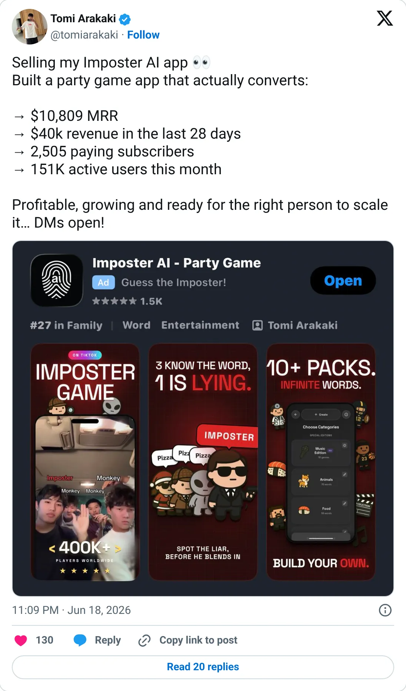
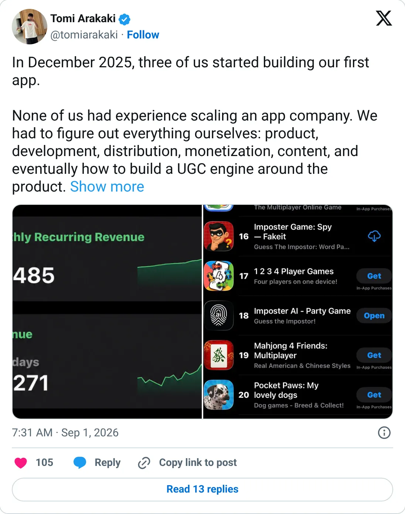

Not a pick
Imposter AI
The ledger looks real. It is not one of the clearer things to start next.
$20.4K MRR
Should you build this
The money looks real, and it is still not a recommendation to start a copy. Imposter AI is listed at $20.4K MRR, taken from TrustMRR on 2026-10-08. The chart has 9 recorded months, enough to show a spike or a collapse, and the latest point agrees with the headline. This is current billing on a connected Stripe, Paddle, Polar, or Dodo account. It does not certify margins, churn, or that every tweet around it is careful.
Cited from the captured posts, shown below: the earliest captured post (Jun 18, 2026) is the source for “Founder (listing it for sale): $10,809 MRR, $40K in 28 days, 2,505 paying subscribers, 151K monthly active users”; the latest milestone (Sep 1, 2026) is the source for “Founder: "In December 2025, three of us started building our first app"”.
Posts this is based on

Founder (listing it for sale): $10,809 MRR, $40K in 28 days, 2,505 paying subscribers, 151K monthly active users
Open on X

Founder: "In December 2025, three of us started building our first app"
Open on X
What the product is
Social-deduction party game app (bluff and guess the imposter) with Party Mode, online play and AI-generated categories. Started by three co-founders in Dec 2025. TrustMRR (RevenueCat) shows 5,301 subscriptions.
Public trail
- $14.8KVerified revenue in Jan 2026 (first month tracked) source
- $10.2KVerified revenue in Feb 2026 source
- $9.3KVerified revenue in Mar 2026 source
- $10KVerified revenue in Apr 2026 source
- $30.4KVerified revenue in May 2026 source
- •Founder (listing it for sale): $10,809 MRR, $40K in 28 days, 2,505 paying subscribers, 151K monthly active users source
- $39.2KVerified revenue in Jun 2026 source
- $30.5KVerified revenue in Jul 2026 source
- $44.6KVerified revenue in Aug 2026 (peak month) source
- •Founder: "In December 2025, three of us started building our first app" source
- $26KVerified revenue in Sep 2026 (latest full month) source